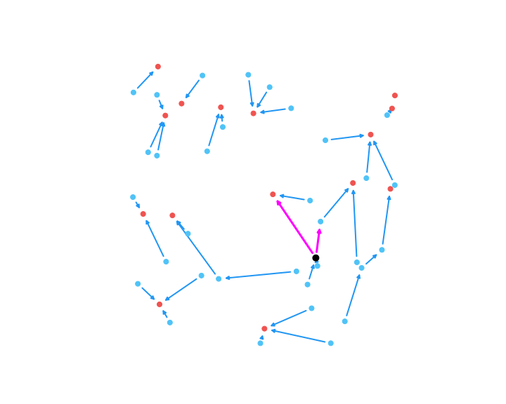
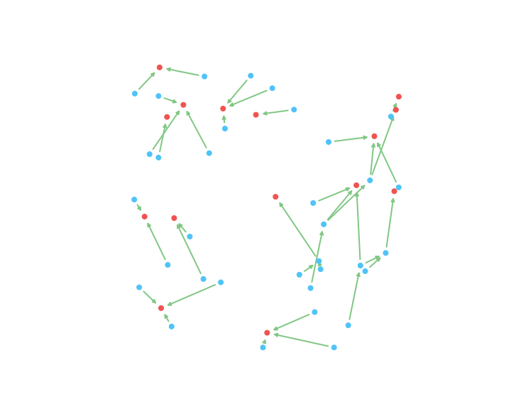

layout: true class: typo, typo-selection --- count: false class: nord-dark, middle, center # 🔀 Spare TSV Assignment in 3D ICs ### Min-Cost Flow via Cycle-Cancellation Descent @luk036 👨💻 · 2026 📅 --- ### 📋 Agenda .pull-left[ **🧠 Part 1: Motivation** - 3D ICs & Spare TSVs - Problem Formulation **🔄 Part 2: Algorithm** - Cycle-Cancellation Descent - digraphx Ecosystem **🔧 Part 3: Implementation** - Residual Graph - Parallel Edge Bug - Howard → Bellman-Ford ] .pull-right[ **🏭 Part 4: Constraint** - Acceptable vs Real Violations - VertexFilter Design - Bug: BFS Used Init **📊 Part 5: Results** - Success & Failure Cases - Sensitivity Analysis **💡 Part 6: Conclusions** ] --- class: nord-light, middle, center ## Part 1: Motivation 🧠 --- ### 🏭 Spare TSV in 3D ICs .pull-left[ **3D ICs** use Through-Silicon Vias (TSVs) for vertical connections. TSVs suffer from defects — spare TSVs (s-TSVs) repair faulty functional TSVs (f-TSVs). **Fault-tolerance structure:** - One s-TSV can repair one f-TSV in its group - Upon fault, signal is **rerouted** through the s-TSV - Rerouting distance must not exceed timing budget $D_{\max}$ ] .pull-right[ .mermaid[ <pre> graph LR subgraph "Fault-tolerance group" F1["f-TSV 1"] --> MUX["MUX"] F2["f-TSV 2"] --> MUX F3["f-TSV 3"] --> MUX MUX --> S["s-TSV"] end </pre> ] ] **Reference:** Chen, Wen, Shi, Hon, Chang, _"Novel Spare TSV Deployment for 3-D ICs Considering Yield and Timing Constraints"_, IEEE TCAD 2015. --- ### 🌐 Problem Formulation **Goal:** Assign spare TSVs to functional TSVs minimizing total rerouting wirelength. .pull-left[ **Graph model:** - Each f-TSV → primal node (demand $-1$, supply 1 unit) - Each s-TSV → spare node (transit, demand $0$) - Super-sink → collects all flow (demand $N$) - Edge $(u,v)$ if within mutual rerouting distance - Edge weight $w_{uv} = \lfloor\text{dist}(u,v) \times 100\rfloor$ (wirelength) - Edge capacity $\ge$ $N/M$ per spare ] .pull-right[ $$ \text{Minimize} \sum_{(u,v)} w_{uv} \cdot x_{uv} $$ Subject to flow conservation at each node and capacity constraints. **Constraint:** Each s-TSV can serve at most one f-TSV. Equivalent: each non-sink node has at most one outgoing flow edge. ] --- class: nord-light, middle, center ## Part 2: Algorithm 🔄 --- ### 🔄 MCF via Cycle-Cancellation Descent .pull-left[ **Algorithm:** 1. Start with a feasible flow 2. Build residual graph $G(x)$ 3. Find any negative-cost cycle in $G(x)$ 4. Cancel by pushing bottleneck flow 5. Repeat until no negative cycles remain **Optimality:** feasible flow is optimal $\iff$ residual graph has no negative-cost cycles. ] .pull-right[ .mermaid[ <pre> graph TD A["Feasible Flow"] --> B["Build Residual G(x)"] B --> C{Any Negative Cycle?} C -->|Yes| D["Cancel Cycle"] D --> B C -->|No| E["OPTIMAL"] </pre> ] ] **Bellman-Ford** finds any negative cycle: run $|V|$ relaxation passes; if $|V|$-th pass still improves, a cycle exists. Trace back predecessor chain to extract it. 🔑 --- ### 🛠️ digraphx Ecosystem .pull-left[ **Key Modules:** - `neg_cycle.py` — NegCycleFinder (Howard's algorithm) - `neg_cycle_q.py` — NegCycleFinderQ (constrained) - `parametric.py` — MaxParametricSolver - `min_cycle_ratio.py` — MinCycleRatioSolver - **`mcf.py`** — Min-cost flow solver (NEW) **`cycle_canceling_mcf(g, demands, sink=None)`** - Stage 1: BFS initial feasible flow - Stage 2: Bellman-Ford cycle-cancellation - Optional `sink` → vertex-disjoint constraint ] .pull-right[ .mermaid[ <pre> graph LR subgraph "digraphx" MCF["mcf.py"] --> NCQ["neg_cycle_q.py"] NCQ --> NC["neg_cycle.py"] MCF --> PARAM["parametric.py"] end </pre> ] ] --- class: nord-light, middle, center ## Part 3: Implementation 🔧 --- ### 🏗️ Residual Graph For each edge $(u,v)$ with flow $x$, capacity $c$, cost $w$: | Residual Edge | Direction | Capacity | Cost | |---|---|---|---| | Forward | $u \to v$ | $c - x$ | $+w$ | | Backward | $v \to u$ | $x$ | $-w$ | ```python def _build_residual(g, flow): for u, neighbors in g.items(): for v, data in neighbors.items(): f = flow.get(u, {}).get(v, 0) if f < cap: residual[u][v] = {cost: +w, capacity: cap - f} if f > 0: residual[v][u] = {cost: -w, capacity: f} ``` --- ### 🐛 Bug: Parallel Edge Collision When both $(a,b)$ and $(b,a)$ exist in the original graph: | Source | Target | Kind | Cost | |--------|--------|------|------| | $a$ | $b$ | forward of $(a,b)$ | $+W$ | | $a$ | $b$ | backward of $(b,a)$ | $-W$ | Second write **overwrites** the first → negative cycle edges lost. **Fix:** keep edge with more negative cost when collision detected. ```python prev = residual[u].get(v) if prev is None or edge["cost"] < prev["cost"]: residual[u][v] = edge ``` **Impact:** spareTSV cost corrected from 1672 → 1108 (matches simplex). --- ### 🔧 Howard → Bellman-Ford **Howard's algorithm** had a detection gap — `find_cycle` missed negative cycles in certain residual graph structures, causing early termination at suboptimal solutions. **Bellman-Ford** finds **all** negative cycles: exhaustive $|V|$-pass relaxation guarantees detection. **`_find_all_neg_cycles_bf`**: yields multiple cycles from a single BF pass, each from a different updated node. | Metric | Howard | Bellman-Ford | |--------|--------|-------------| | Cost (η=1.6) | 1672 then 1108 | 1108 | | Random accuracy | 75/78 | 80/80 | | Detection gap | Yes | No | --- class: nord-light, middle, center ## Part 4: Vertex Constraint 🏭 --- ### 🔗 Acceptable vs Real Violations **Acceptable** ✅: Single-incoming, multiple-outgoing nodes. Hardware can pick one outgoing path arbitrarily. No routing ambiguity. **Not acceptable** ❌: Nodes with **both** multiple incoming AND multiple outgoing. Creates ambiguity: which incoming flow goes to which outgoing? .mermaid[ <pre> graph TD subgraph "VALID" A1[src1] --> B["node X"] --> C1[dst1] B --> C2[dst2] end subgraph "INVALID" D1[src1] --> E["node Y"] D2[src2] --> E E --> F1[dst1] E --> F2[dst2] end style B fill:#81c784 style E fill:#ef5350 </pre> ] --- ### 🧩 VertexFilter Design ```python class VertexFilter: def __init__(self, sink): self.used = set() # nodes with outgoing flow ``` **`cycle_uses_used_node(cycle)`** — only blocks cycles where a used node gains outflow **without** a balancing reduction: - Collect `fwd_nodes` (forward edges, p=+1) and `bwd_nodes` (backward edges, p=-1) - Reject if any node in `fwd - bwd` is already in `used` - Backward edges (p=-1) always allowed — they remove flow **`accept_cycle(cycle, flow, bn)`** — forward edges add to `used`; backward edges may remove when all flow drops to zero. --- ### 🐛 Bug: BFS Flow Not in Used Set **Problem:** BFS initial flow creates outgoing edges, but `used` starts empty. First few cycles freely add second outgoing edges to BFS-used nodes. **Fix:** Initialize `used` from BFS flow before cycle cancellation: ```python for u in flow: for v, f in flow[u].items(): if f > 0 and u != sink: vf.used.add(u) break ``` | Case | Before Fix | After Fix | |------|-----------|-----------| | VdC η=1.1 | mb 2→3 ❌ | mb 2→2 (stable) | | Random η=1.7 | mb 1→0 ✅ | mb 1→0 ✅ | | Random η=1.3 | mb 2→5 ❌ | mb 2→4 (less bad) | --- class: nord-light, middle, center ## Part 5: Results 📊 --- ### ✅ Success: Constraint Eliminates Violation **Random test case (N=34, M=15, η=1.7, 420 edges):** .pull-left[ **OLD (unconstrained):** <center><p></p></center> mb=1 (node 1, magenta), cost=615 ] .pull-right[ **NEW (constrained):** <center><p></p></center> mb=0 (all green), cost=734 (+19%) ] --- ### 📊 η Sensitivity (Random Positions) .pull-left[ **Constraint effect by edge density:** | η | Edges | Old mb | New mb | Status | |---|-------|--------|--------|--------| | 1.8 | 482 | 0 | 0 | SAME | | 1.7 | 420 | 1 | 0 | ✅ | | 1.6 | 380 | 2 | 2 | SAME | | 1.5 | 344 | 2 | 1 | ✅ | | 1.4 | 308 | 1 | 1 | SAME | | 1.3 | 260 | 2 | 4 | ❌ | ] .pull-right[ **Observations:** - Constraint helps at medium density (η=1.5–1.7) - Too dense: no violations to fix - Too sparse: constraint can't find safe alternatives - **Narrow window** where constraint improves mb ] --- ### 📈 VdC vs Random Distribution .pull-left[ **VdC (uniform distribution):** | η | Old mb | New mb | |---|--------|--------| | 1.6 | 0 | 0 | | 1.4 | 0 | 1 (worse) | | 1.2 | 0 | 2 (worse) | | 1.1 | 2 | 2 (stable) | VdC naturally produces clean solutions at most densities. Constraint can only match or degrade. ] .pull-right[ **Random (clustered):** | η | Old mb | New mb | |---|--------|--------| | 1.7 | 1 | 0 ✅ | | 1.5 | 2 | 1 ✅ | | 1.3 | 2 | 4 ❌ | Random positions create natural bottlenecks where constraint can help — but only in narrow density band. ] --- class: nord-light, middle, center ## Part 6: Conclusions 💡 --- ### 📋 Key Findings .pull-left[ **✅ What works:** - Bellman-Ford eliminates Howard's detection gap - Cycle-cancellation matches simplex optimality - VertexFilter correctly prevents new multi-in/out when `used` is properly initialized **🔧 Bugs found & fixed:** - Parallel edge collision in residual graph - BFS flow not populating `used` set ] .pull-right[ **⚠️ Limitations:** - Constraint helps only in narrow density window - Cannot fix pre-existing BFS violations on VdC graphs - Sparse graphs lack alternative cycle choices **💻 Code:** `digraphx/src/digraphx/mcf.py`, `spareTSV/experi-descent-*.py` **📄 Reports:** `bug-fix-note.md`, `violation-handling.md` ] --- count: false class: nord-dark, middle, center # 🙋 Q&A ### Thank you! Slides built with Remark.js 🎉 · KaTeX · Mermaid · Nord Theme